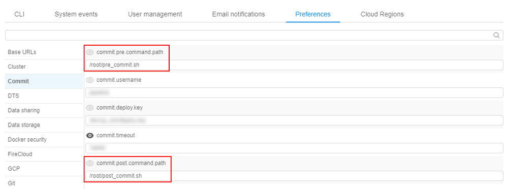

10.4. Edit a Tool
To view and edit tool's attributes see 17. CP objects tagging by additional attributes.
Edit a Tool description
Select a Tool and click its name. Navigate to the Description tab of a Tool. Click the Edit buttons on the right side of the screen to modify the Short description and Full description of the Tool.
Edit a Tool version
In this tab, you can run a Tool version with custom settings or delete a Tool version. To see an example of a launching a Tool with custom settings see here.
Run/Delete a Tool
- Navigate to the Versions tab of a Tool.
- Click on the arrow near the Run button.
- Select Custom settings option to configure run parameters.
- If you want to delete a Tool version, click the Delete button.
Commit a Tool
Commit function allows modifying existing Tools.
- Launch a Tool in the sleep infinity mode. See an example here.
- SSH into it via SSH button.

- Change something.
Example: here we install a biopython package into this Docker image. Wait for the installation to complete!
- Go back to the Logs tab and click the COMMIT button.
- Choose a Docker registry and a Tool group.
- Change a name for the modified image or add a new version to the current Tool by typing the version name in a separate box.
Note: to add a new version to the existing Tool don't change the original name of the Tool!
Note: image name and a version name should be written according to the following rules:- May contain lowercase letters, digits, and separators.
- A separator is defined as a period, one or two underscores, or one or more dashes.
- A name component may not start or end with a separator.
- Tick boxes if needed:
- Delete runtime files box - to delete all files from /runs/[pipeline name] folder before committing.
- Stop pipeline box - to stop the current run after committing.
In this example, we will change "base-generic-centos7" to "base-generic-centos7-biopython".
- Committing may take some time:

When it is complete COMMITING status on the right side of the screen will change to COMMIT SUCCEEDED. In round brackets the date/time of the latest commit is shown:

- Find a modified Tool in the registry.
Committing features
In certain use-cases, extra steps shall be executed before/after running the commit command in the container. For example, to avoid warning messages about terminating the previous session (which was committed) of the tool application in a non-graceful manner. Some applications may require extra cleanup to be performed before the termination.
To workaround such issues in the Cloud Pipeline an approach of "pre/post-commit hooks" is implemented. That allows to perform some graceful cleanup/restore before/after performing the commit itself.
Note: Those hooks are valid only for the specific images and therefore shall be contained within those images. Cloud Pipeline itself only performs the calls to the hooks if they exist.
There are two preferences from system-level settings that determine a behavior of the "pre/post-commit hooks" approach:

commit.pre.command.path: specified a path to a script within a docker image, that will be executed in a currently running container, before docker commit occurs (default value:/root/pre_commit.sh).- This option is useful if any operations shall be performed with the running processes (e.g. send a signal), because in the subsequent post operation - only filesystem operations will be available.
Note: any changes done at this stage will affect the running container.
- This option is useful if any operations shall be performed with the running processes (e.g. send a signal), because in the subsequent post operation - only filesystem operations will be available.
commit.post.command.path: specified a path to a script within a docker image, that will be executed in a committed image, after docker commit occurs (default value:/root/post_commit.sh).- This hook can be used to perform any filesystem cleanup or other operations, that shall not affect the currently running processes.
Note: User shall have ROLE_ADMIN to read and update system-level settings.
So, when you try to commit some tool, the Cloud Pipeline will check preferences described above and execute scripts with the specified names, if that scripts files exist in a docker image. If a corresponding pre/post script is not found in the docker image - it will not be executed.
Consider an example with RStudio tool, that Cloud Pipeline provides "out of the box". RStudio Docker image contains a post-commit script that cleans the session after the commit:
- Open the Tools page, launch RStudio.
- SSH to the launched run via the SSH control in the upper-right corner of the run logs page.
- Check that
post_commit.shscript exists in the Docker image - use the commandls /root/:

- View the contents of that script. It looks like that:
Note:/etc/cp_env.shis a special Cloud Pipeline script, that sets all environment variables of the current docker container.
So, as you can see from the code, as the result of that script launch will be a cleanup (removing) of the RStudio active session from the user home directory. - Close SSH tab and try to do a commit - click the COMMIT control in the upper-right corner of the run logs page. Specify a new name for the committed tool, e.g.
rstudio-test:

- While image is being committed, you can see the follow-up log for the
CommitPipelineRuntask:

Here:- (1) pre-commit script is not found in the docker image - nothing will be executed before commit
- (2) post-commit script is found at the specified path in the docker image - and it is being executed
- (3) post-commit script was performed successfully
Edit a Tool settings
Settings in this tab are applied to all Tool versions (i.e. these settings will be a default for all Tool version).
- Navigate to the Settings tab.
- Specify Endpoints for a Tool by click "Add endpoint" button:

In the example below: the port is8788and the endpoint name isrstudio-s3fs:

Let's look at the endpoint closer:- "nginx" - type of the endpoints (only nginx is currently supported)
- "port":
XXXX- an application will be deployed on this port on the pipeline node. - You can specify additional nginx configuration for that endpoint in the text field bottom in JSON format.
Note: optional path parameter may be required in case your application starts on <host:port:>/path.
Note: optional additional parameter may be required in case you need to specify nginx location settings. See more information here. - "name" - this value will be visible as a hyperlink in the UI. It is especially convenient when user sets more than one endpoint configuration for an interactive tool (learn more about interactive services - 15. Interactive services).
In the example below, we name one endpoint as "rstudio-s3fs" and another one as "shiny".

This is how everything will look in the Run log window:
- Click the + New Label button and add a label to the Tool (e.g. "Awesome Tool").
- Specify "Execution defaults":
- Instance type (e.g. "m4.large")
- Price type (e.g. "Spot")
- Disk size in Gb (e.g. "20")
- select available storages
- configure cluster, if it's necessary for your Tool
- write the Default command for the Tool execution (e.g.
echo "Hello world!")
- If it's necessary for your Tool - add system or custom parameters. For more details see 6.1. Create and configure pipeline.
- Click Save button to save these settings.